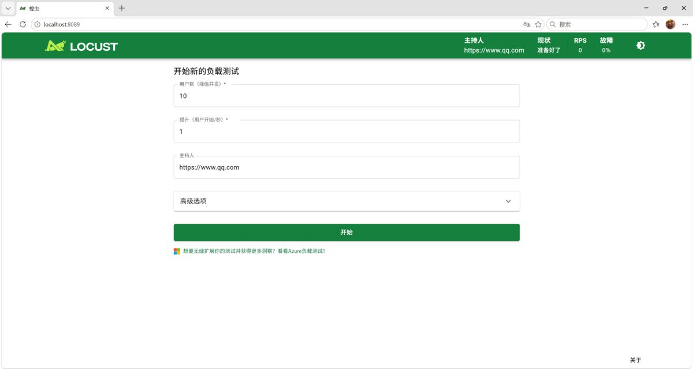
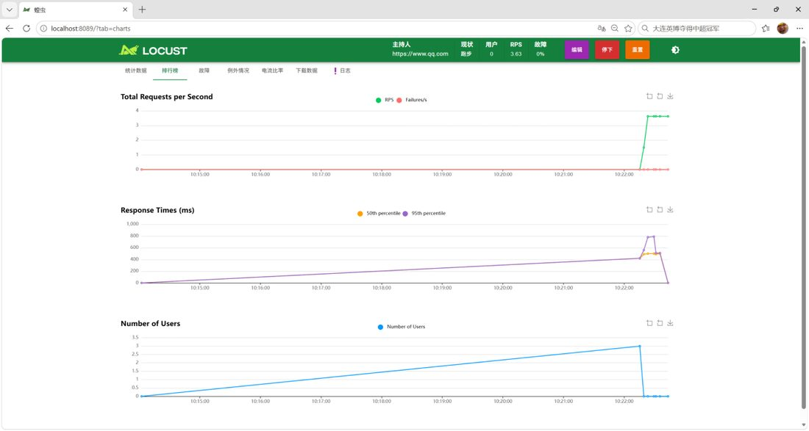
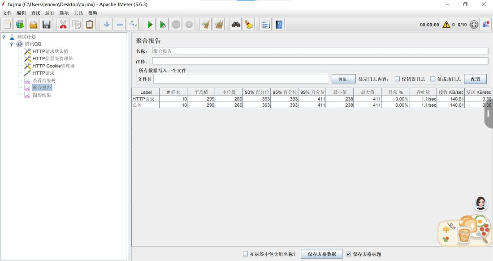
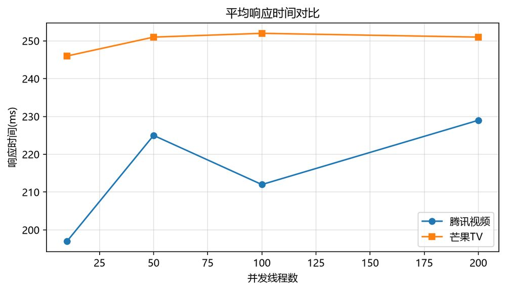

🔍 性能数据查询器
选择工具、目标与并发档位，立即出对应场景的实测指标卡与响应时间对比图（数据全部来自本组实测报告）。
Locust 累计请求
9,556次
5 组负载，全部成功
JMeter 正式用例
4档
10 / 50 / 100 / 200 线程
请求失败率
0%
两站 8 组用例异常率均为 0
峰值平均响应
1,567ms
Locust 200 用户持续压测
同站工具对比：JMeter 与 Locust
同一网址、同一网络时段、相同并发档位与相同启动节奏（线程数 ÷ Ramp-up = 孵化速率）
平均响应时间对比
单位 ms · 并发档位对齐
吞吐量对比
单位 req/s · JMeter 受 Ramp-up 节奏限制
如何正确理解两条曲线的差距：JMeter 每个线程只请求 1 次（循环次数 1），样本数即线程数，发压窗口短、只覆盖启动爬坡阶段，平均响应自然偏低、吞吐量约等于“线程数 ÷ Ramp-up”；
Locust 用户孵化后持续请求，累计样本从 55 个到 5,781 个，负载稳定后排队时延累积，平均值被显著拉高。
两者口径不同，不能直接比较绝对值，但可以共同印证一点：腾讯网首页在 200 并发以内零失败，而 Locust 持续压测显示 200 用户档位平均响应升至 1,567 ms，已接近性能拐点。
Locust 五组用例结果
| 用例 | 并发用户 | 孵化速率 | 请求数 | 平均响应 (ms) | 中位数 (ms) | 95% 百分位 (ms) | 最大 (ms) | 失败率 | RPS |
|---|---|---|---|---|---|---|---|---|---|
| 用例 1 | 10 | 1 | 55 | 514.84 | 500 | 780 | 821 | 0 | 3.63 |
| 用例 2 | 50 | 2 | 642 | 649.64 | 650 | 820 | 1,023 | 0 | 35 |
| 用例 3 | 100 | 2 | 2,271 | 774.99 | 640 | 1,500 | 2,284 | 0 | 55 |
| 用例 4 | 200 | 2 | 5,781 | 1,566.98 | 1,400 | 3,000 | 4,610 | 0 | 51.4 |
| 用例 5 · 瞬时增压 | 200 | 20 | 807 | 1,369.86 | 1,000 | 2,700 | 2,878 | 0 | 61.7 |
JMeter 五组用例结果
| 用例 | 线程数 | Ramp-up (s) | 样本数 | 平均值 (ms) | 95% 百分位 (ms) | 最大值 (ms) | 异常 % | 吞吐量 (req/s) |
|---|---|---|---|---|---|---|---|---|
| 用例 1 | 10 | 10 | 10 | 299 | 393 | 411 | 0 | 1.1 |
| 用例 2 | 50 | 25 | 50 | 258 | 343 | 402 | 0 | 2.0 |
| 用例 3 | 100 | 50 | 100 | 273 | 387 | 418 | 0 | 2.0 |
| 用例 4 | 200 | 100 | 200 | 259 | 362 | 400 | 0 | 2.0 |
| 补充 · 瞬时加压 | 200 | 10 | 200 | 262 | 366 | 413 | 0 | 19.8 |
同类网站对比：腾讯视频 与 芒果TV
相同用例参数、背靠背执行；两站均为公开可访问的视频门户首页
平均响应时间对比
单位 ms · 芒果TV 四个档位均高于腾讯视频 20~50 ms
差异从哪来
- 腾讯视频：服务器标识 Lego Server，首页约 141 KB，实测 197~229 ms
- 芒果TV：Tengine 服务器，首页仅约 21 KB，但访问存在重定向跳转，实测 246~252 ms
- 结论：页面体积小不等于响应快，重定向与处理路径开销才是主因
- 两站吞吐量完全一致（1.1 → 2.0 req/s），该数值受本机发压能力与 Ramp-up 节奏限制，不代表服务器上限
| 网站 | 线程数 | 平均值 (ms) | 95% 百分位 (ms) | 最小值 (ms) | 最大值 (ms) | 异常 % | 吞吐量 (req/s) |
|---|---|---|---|---|---|---|---|
| 腾讯视频 | 10 | 197 | 213 | 178 | 234 | 0 | 1.1 |
| 50 | 225 | 262 | 186 | 282 | 0 | 2.0 | |
| 100 | 212 | 245 | 167 | 285 | 0 | 2.0 | |
| 200 | 229 | 263 | 186 | 413 | 0 | 2.0 | |
| 芒果TV | 10 | 246 | 299 | 200 | 310 | 0 | 1.1 |
| 50 | 251 | 283 | 228 | 306 | 0 | 2.0 | |
| 100 | 252 | 305 | 220 | 364 | 0 | 2.0 | |
| 200 | 251 | 295 | 221 | 400 | 0 | 2.0 |
执行取证
测试执行过程的原始截图，全部按“每档运行前清空结果”的规范采集




测试结论
- 腾讯网首页在 10~200 并发区间零失败，平均响应稳定在 258~299 ms（JMeter 口径），服务稳定性良好
- Locust 持续压测显示 100 用户吞吐达 55 RPS，200 用户平均响应升至 1,567 ms，接近性能拐点；突发增压（孵化速率 20）对系统的冲击明显大于平稳加压
- 腾讯视频与芒果TV 在 200 线程内均零异常，芒果TV 因重定向跳转响应时间偏高 20~50 ms，与页面体积无关
- 优化建议：应用层加缓存、数据库优化索引与连接池、部署层负载均衡，并增加限流熔断保护核心链路